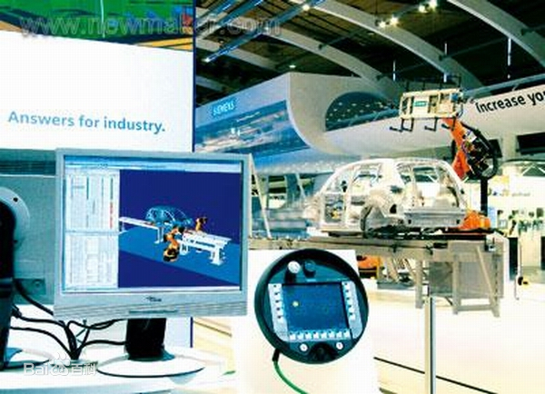
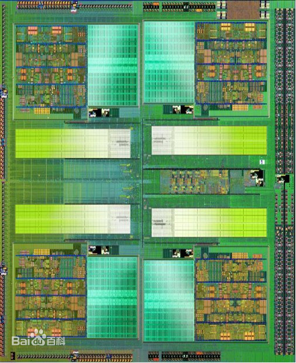

从计算机自身导论出发，延申出了程序设计，硬件设计，信息概论三个大模块，再细分为计算机编程语言、计算机系统等等一系列相关扩展学科。
形成了一个庞大的计算机科学学科网络

计算机技术的内容非常广泛，可粗略分为计算机系统技术、计算机器件技术、计算机部件技术和计算机组装技术等几个方面。
计算机程序又称“计算机软件”，是指为了得到某种结果而可以由计算机等具有信息处理能力的装置执行的代码化指令序列，或者可以被自动转换成代码化指令序列的符号化指令序列或者符号化语句序列

集成电路（integrated circuit）是一种微型电子器件或部件。采用一定的工艺，在一定体积的电子管内封装电路的技术。
区块链是分布式数据存储、点对点传输、共识机制、加密算法等计算机技术的新型应用模式。
三、对计算机专业的认识